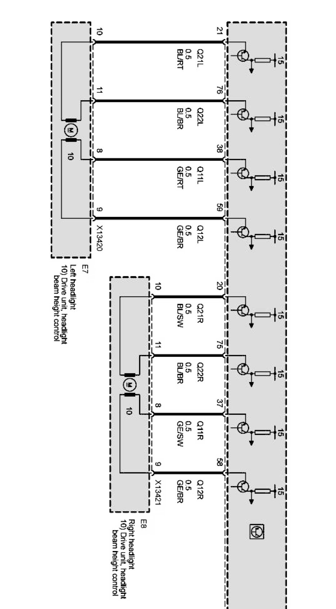
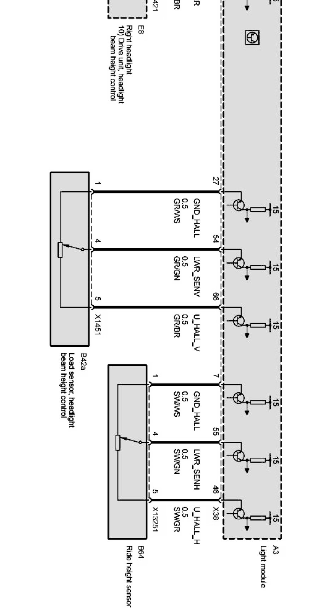

Operation CHARM
: Car repair manuals for everyone.
Home
>>
BMW
>>
2007
>>
X3 3.0si (E83) L6-3.0L (N52K)
>>
Repair and Diagnosis
>>
Diagrams
>>
Electrical Diagrams
>>
Body
>>
Lighting
>>
Headlight Widening Adjustment (( X Series_X3-E83 Without AHL ) or ( Z Series_Z4-E85/E86 ))
>>
Automatic Headlight Vertical Aim Control (X Series_X3-E83 With Xenon Lights As of 09/06)
Automatic Headlight Vertical Aim Control (X Series_X3-E83 With Xenon Lights As of 09/06)
Automatic headlight vertical aim control Part 1:

Automatic headlight vertical aim control Part 2:
